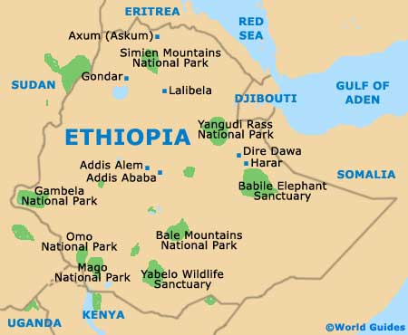

Natural Tourist Attractions
The natural beauty of Ethiopia amazes the first-time visitor. Ethiopia is a land of rugged mountains ( some 25 are over 4000 meters high) broad savannah, lakes and rivers. The unique Rift Valley is a remarkable region of volcanic lakes, with their famous collections of birdlife, great escarpments and stunning vistas. Tisisat, the blue Nile falls, must rank as one of the greatest natural spectacles in Africa today. With 14 major wildlife reserves, Ethiopia provides a microcosm of the entire subsaharan ecosystem. Birdlife abounds, and indigenous animals from the rare Walia ibex to the shy wild ass, roam free just as nature intended. Ethiopia, after the rains, is a land decked with flowers and with many more native plants than most countries in Africa. Among the many natural tourist attractions only the principal ones are briefly given below.
The Blue Nile Falls (Tisisat Falls)
The river Nile, over 800km in length within Ethiopia and the longest river in Africa, holds part of its heart in Ethiopia. From lake Tana, the Blue Nile, known locally as Abbay, flows for 800 km within Ethiopia to meet the white Nile in Khartoum to form the great river that gives life to Egypt and the Sudan. It has been said that the Blue Nile contributes up to 80% of the Nile's flow. The Blue Nile Falls are about an hour by tour bus from Bahar Dar. Known locally as Tis Isat, the falls are over 400m (1312ft) wide and 45m (148ft) deep. Because of a series of dams near Bahar Dar, they aren't as impressive as they used to be. Nowhere, is it more spectacular than where it thunders over the Tisisat Falls literally " Smoking Water" - near Bahar Dar. Here millions of gallons of water cascade over the cliff face and into a gorge, creating spectacular rainbows, in one of the most awe-inspiring displays in Africa.
The Blue Nile falls can easily be reached from Bahir Dar and the Scenic beauty of the Blue Nile Gorge, 225km from Addis Ababa, can be enjoyed as part of an excursion from the capital.
The Sof Omar Cave
Sof Omar, a tiny Muslim village in Bale, is the site of an amazing complex of natural caves, cut by the Wab River as it found its way from the nearby mountains. The settlement, which is a religious site, is named after a local Sheikh.
Armed with torches and official map, visitors to Sof Omar make their way underground, far into the bowels of the earth, beside a subterranean stream, and there can see an extraordinary number of arched portals, high eroded ceilings and deep echoing chambers.
The Rift Valley
The Ethiopian Rift Valley, which is part of the famous East African Rift Valley, comprises numerous hot springs, beautiful lakes and a variety of wildlife. The valley is the result of two parallel faults in the earth's surface between which, in distant geological time, the crust was weakened, and the land subsided. Ethiopia is often referred to as the " water tower" of Eastern Africa because of the many rivers that pour off the high tableland. The Great Rift Valley's passage through Ethiopia is marked by a chain of seven lakes.
Each of the seven lakes has its own special life and character and provids ideal habitats for the exuberant variety of flora and fauna that make the region a beautiful and exotic destination for tourists.
Most of the lakes are suitable and safe for swimming other water sports. Besides, lakes Abiata and Shalla are ideal places for bird watchers. Most of the Rift Valley lakes are not fully exploited for touristic purposes except lake Langano where tourist class hotels are built. The Rift Valley is also a site of numerous natural hot springs & the chemical contents of the hot springs are highly valued for their therapeutic purposes though at present they are not fully utilized. In short, the Rift Valley is endowed with many beautiful lakes , numerous hot springs, warm and pleasant climate and a variety of wildlife. It is considered as one of the most ideal areas for the development of international tourism in Ethiopia.
Ethiopia's Historical Attractions
Ethiopia, the oldest independent nation in Africa, has a heritage dating back to first century AD. Traders from Greece, Rome, Persia and Egypt knew of the riches of what is now Ethiopia, and by the first century AD, Axum was the capital of a great Empire . This realm became one of the first Christian lands of Africa. Late in the 10th Century , Axum declined and a new Zagwe dynasty, centred what is now Lalibela, ruled the land . Axum, Lalibela and Gonder now provide our greatest historical legacy. It was in the 16th Century that the son of the great explorer Vasco Da Gama came to Ethiopia, but then found a land of many kingdoms and provinces beset by feuds and War.
Legend has it that Emperor Menelik I, the son of the Queen of Sheba and king Solomon, brought the Ark of the Covenant from Jerusalem to Axum, where he settled and established one of the world’s longest known, uninterrupted monarchical dynasties.
This is only one example of Ethiopia’s magnificent history, which encompasses legend and tradition, mystery and fact, from a powerful and religious ancient civilization. The well -trodden path through Ethiopia’s famous and fascinating historic places takes you through a scenically magnificent world of fairy -tale names, such as Lalibela, Gondar, Deber Damo and Bahar Dar.
Several of Ethiopia's more remote areas are excellent for walking safaris, which are offered by several good tour operators in the country. Walking tours, best planned for the dry season, offer the traveller the opportunity for awe-inspiring vantage points from which to view many of Ethiopia's natural wonders, cultural riches and architectural heritage. In Gondar, there are fairytale castles dating back to the 17th century. In Harar, the visitor can enjoy the incense-flavored mysteries of narrow alleyways and towering minarets.